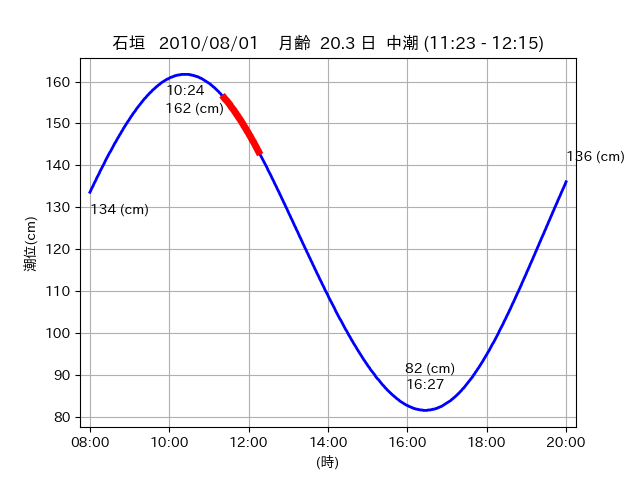
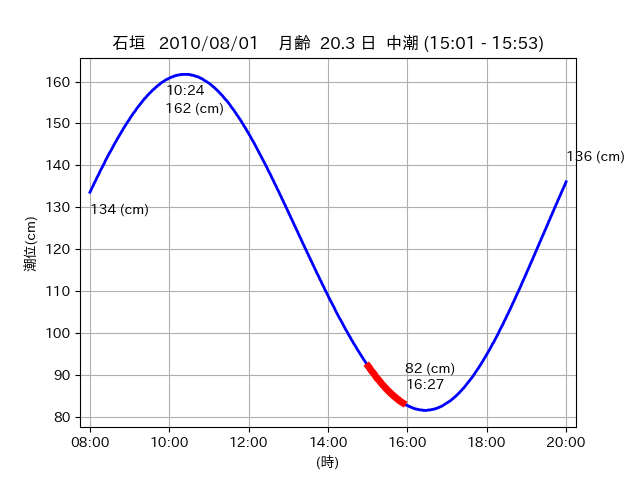

<!DOCTYPE html>
<html>
<head>
    
    <meta http-equiv="content-type" content="text/html; charset=UTF-8" />
    
        <script>
            L_NO_TOUCH = false;
            L_DISABLE_3D = false;
        </script>
    
    <style>html, body {width: 100%;height: 100%;margin: 0;padding: 0;}</style>
    <style>#map {position:absolute;top:0;bottom:0;right:0;left:0;}</style>
    <script src="https://cdn.jsdelivr.net/npm/leaflet@1.9.3/dist/leaflet.js"></script>
    <script src="https://code.jquery.com/jquery-3.7.1.min.js"></script>
    <script src="https://cdn.jsdelivr.net/npm/bootstrap@5.2.2/dist/js/bootstrap.bundle.min.js"></script>
    <script src="https://cdnjs.cloudflare.com/ajax/libs/Leaflet.awesome-markers/2.0.2/leaflet.awesome-markers.js"></script>
    <link rel="stylesheet" href="https://cdn.jsdelivr.net/npm/leaflet@1.9.3/dist/leaflet.css"/>
    <link rel="stylesheet" href="https://cdn.jsdelivr.net/npm/bootstrap@5.2.2/dist/css/bootstrap.min.css"/>
    <link rel="stylesheet" href="https://netdna.bootstrapcdn.com/bootstrap/3.0.0/css/bootstrap-glyphicons.css"/>
    <link rel="stylesheet" href="https://cdn.jsdelivr.net/npm/@fortawesome/fontawesome-free@6.2.0/css/all.min.css"/>
    <link rel="stylesheet" href="https://cdnjs.cloudflare.com/ajax/libs/Leaflet.awesome-markers/2.0.2/leaflet.awesome-markers.css"/>
    <link rel="stylesheet" href="https://cdn.jsdelivr.net/gh/python-visualization/folium/folium/templates/leaflet.awesome.rotate.min.css"/>
    
            <meta name="viewport" content="width=device-width,
                initial-scale=1.0, maximum-scale=1.0, user-scalable=no" />
            <style>
                #map_ae3df870fbd5949f6b7e898e6b9cfeb6 {
                    position: relative;
                    width: 2048.0px;
                    height: 1600.0px;
                    left: 0.0%;
                    top: 0.0%;
                }
                .leaflet-container { font-size: 1rem; }
            </style>
        
</head>
<body>
    
    
            <div class="folium-map" id="map_ae3df870fbd5949f6b7e898e6b9cfeb6" ></div>
        
</body>
<script>
    
    
            var map_ae3df870fbd5949f6b7e898e6b9cfeb6 = L.map(
                "map_ae3df870fbd5949f6b7e898e6b9cfeb6",
                {
                    center: [24.412, 124.268],
                    crs: L.CRS.EPSG3857,
                    ...{
  "zoom": 12,
  "zoomControl": true,
  "preferCanvas": false,
}

                }
            );

            

        
    
            var tile_layer_c3254d03a02c7e11e4668035917a4072 = L.tileLayer(
                "https://cyberjapandata.gsi.go.jp/xyz/seamlessphoto/{z}/{x}/{y}.jpg",
                {
  "minZoom": 0,
  "maxZoom": 18,
  "maxNativeZoom": 18,
  "noWrap": false,
  "attribution": "\u5730\u7406\u9662\u5730\u56f3",
  "subdomains": "abc",
  "detectRetina": false,
  "tms": false,
  "opacity": 1,
}

            );
        
    
            tile_layer_c3254d03a02c7e11e4668035917a4072.addTo(map_ae3df870fbd5949f6b7e898e6b9cfeb6);
        
    
            var marker_bd5f903592f401d49cf8aeeb70ec6979 = L.marker(
                [24.5156, 124.3068],
                {
}
            ).addTo(map_ae3df870fbd5949f6b7e898e6b9cfeb6);
        
    
            var icon_b77272cb00b68c941a0041c708b72573 = L.AwesomeMarkers.icon(
                {
  "markerColor": "orange",
  "iconColor": "white",
  "icon": "info-sign",
  "prefix": "glyphicon",
  "extraClasses": "fa-rotate-0",
}
            );
        
    
        var popup_ab2d028f8039ac6dab8d90092d51c7a5 = L.popup({
  "maxWidth": "100%",
});

        
            
                var html_903cf2566221315f7240228d95eb16bd = $(`<div id="html_903cf2566221315f7240228d95eb16bd" style="width: 100.0%; height: 100.0%;"><table><tr><td></td></tr><tr><td><center>20100801 No.1 </center></table></td></tr></table</div>`)[0];
                popup_ab2d028f8039ac6dab8d90092d51c7a5.setContent(html_903cf2566221315f7240228d95eb16bd);
            
        

        marker_bd5f903592f401d49cf8aeeb70ec6979.bindPopup(popup_ab2d028f8039ac6dab8d90092d51c7a5)
        ;

        
    
    
                marker_bd5f903592f401d49cf8aeeb70ec6979.setIcon(icon_b77272cb00b68c941a0041c708b72573);
            
    
            var poly_line_51d7994bc5a5a7709dce05dc59937ad6 = L.polyline(
                [[24.5156, 124.3068], [24.5202, 124.3138]],
                {"bubblingMouseEvents": true, "color": "#FF00FF", "dashArray": null, "dashOffset": null, "fill": false, "fillColor": "#FF00FF", "fillOpacity": 0.2, "fillRule": "evenodd", "lineCap": "round", "lineJoin": "round", "noClip": false, "opacity": 1.0, "smoothFactor": 1.0, "stroke": true, "weight": 3}
            ).addTo(map_ae3df870fbd5949f6b7e898e6b9cfeb6);
        
    
            var marker_4fb07259c8b9d5285beea37b70e49f27 = L.marker(
                [24.4774, 124.2939],
                {
}
            ).addTo(map_ae3df870fbd5949f6b7e898e6b9cfeb6);
        
    
            var icon_8b324fe1106f3cd0d3e1fff724d465db = L.AwesomeMarkers.icon(
                {
  "markerColor": "orange",
  "iconColor": "white",
  "icon": "info-sign",
  "prefix": "glyphicon",
  "extraClasses": "fa-rotate-0",
}
            );
        
    
        var popup_a4ea59ee11d1726a3f43d2370baf5837 = L.popup({
  "maxWidth": "100%",
});

        
            
                var html_22a412c45fd2a7059f0a2cff8a954b4c = $(`<div id="html_22a412c45fd2a7059f0a2cff8a954b4c" style="width: 100.0%; height: 100.0%;"><table><tr><td></td></tr><tr><td><center>20100801 No.2 </center></table></td></tr></table</div>`)[0];
                popup_a4ea59ee11d1726a3f43d2370baf5837.setContent(html_22a412c45fd2a7059f0a2cff8a954b4c);
            
        

        marker_4fb07259c8b9d5285beea37b70e49f27.bindPopup(popup_a4ea59ee11d1726a3f43d2370baf5837)
        ;

        
    
    
                marker_4fb07259c8b9d5285beea37b70e49f27.setIcon(icon_8b324fe1106f3cd0d3e1fff724d465db);
            
    
            var poly_line_307488fe5fa246dabd924452de0eff2e = L.polyline(
                [[24.4774, 124.2939], [24.4795, 124.2985]],
                {"bubblingMouseEvents": true, "color": "#FF00FF", "dashArray": null, "dashOffset": null, "fill": false, "fillColor": "#FF00FF", "fillOpacity": 0.2, "fillRule": "evenodd", "lineCap": "round", "lineJoin": "round", "noClip": false, "opacity": 1.0, "smoothFactor": 1.0, "stroke": true, "weight": 3}
            ).addTo(map_ae3df870fbd5949f6b7e898e6b9cfeb6);
        
    
            var marker_393b551615705bf29df9eced32313f66 = L.marker(
                [24.4147, 124.2671],
                {
}
            ).addTo(map_ae3df870fbd5949f6b7e898e6b9cfeb6);
        
    
            var icon_0696b97ad13ec656e554806ef2a865f3 = L.AwesomeMarkers.icon(
                {
  "markerColor": "orange",
  "iconColor": "white",
  "icon": "info-sign",
  "prefix": "glyphicon",
  "extraClasses": "fa-rotate-0",
}
            );
        
    
        var popup_423fff2f8353c3e6850fc5ae285e6dbe = L.popup({
  "maxWidth": "100%",
});

        
            
                var html_35e5dff70856b32a840efab40f627824 = $(`<div id="html_35e5dff70856b32a840efab40f627824" style="width: 100.0%; height: 100.0%;"><table><tr><td></td></tr><tr><td><center>20100801 No.3 </center></table></td></tr></table</div>`)[0];
                popup_423fff2f8353c3e6850fc5ae285e6dbe.setContent(html_35e5dff70856b32a840efab40f627824);
            
        

        marker_393b551615705bf29df9eced32313f66.bindPopup(popup_423fff2f8353c3e6850fc5ae285e6dbe)
        ;

        
    
    
                marker_393b551615705bf29df9eced32313f66.setIcon(icon_0696b97ad13ec656e554806ef2a865f3);
            
    
            var poly_line_198bb82cb23f47268dd24c1f9f8c69d8 = L.polyline(
                [[24.4147, 124.2671], [24.4092, 124.268]],
                {"bubblingMouseEvents": true, "color": "#00FFFF", "dashArray": null, "dashOffset": null, "fill": false, "fillColor": "#00FFFF", "fillOpacity": 0.2, "fillRule": "evenodd", "lineCap": "round", "lineJoin": "round", "noClip": false, "opacity": 1.0, "smoothFactor": 1.0, "stroke": true, "weight": 3}
            ).addTo(map_ae3df870fbd5949f6b7e898e6b9cfeb6);
        
</script>
</html>